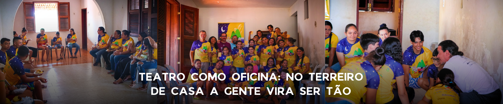
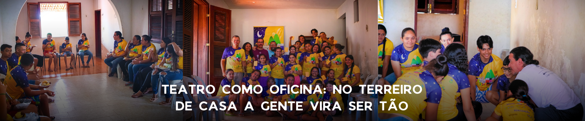

Escola Rural de Teatro dos Sertões: quando a arte transforma o cotidiano do sertão
Na pequena comunidade de Alegre II, em Itatira, o teatro tem mudado rotinas, criado novos sonhos e revelado talentos. A Escola Rural de Teatro dos Sertões, em andamento no Espaço Cultural Sertão das Artes, vem se consolidando como uma das mais importantes iniciativas culturais da região.
Realizada pela FUNARTE e pelo Governo Federal, dentro do Programa de Ações Continuadas 2024, a escola nasceu em 2023 a partir da mobilização da Associação Comunitária Menino Jesus de Alegre II e do Grupo de Teatro Boi Catingueiro, selecionados em edital nacional. Hoje, a experiência já atinge 75 alunos em cursos de Escrita Criativa e Dramaturgia, Interpretação Teatral e, a partir de setembro, Direção e Produção Teatral.
Um palco para crianças e adolescentes da zona rural
O projeto é voltado para crianças e adolescentes da zona rural de Itatira, que encontram na escola uma oportunidade rara de contato direto com a arte. Mais do que aulas de teatro, o espaço se tornou um local de convivência, troca de saberes e fortalecimento da identidade cultural sertaneja.
“Antes eu tinha vergonha de falar em público, mas agora já consigo até subir no palco”, conta uma das alunas. Outro jovem complementa: “Na dramaturgia aprendi a escrever as histórias que ouço dos meus avós e transformá-las em peças de teatro”.
Transformação sentida pela comunidade
A alegria também é de quem assiste de perto essa mudança. Renata Muniz, moradora de Alegre II, emociona-se: “Ver nossos filhos e netos no palco é uma realização. Nunca pensei que o teatro chegaria até aqui dessa forma”.
Para Michele Oliveira, mãe de um aluno, o impacto é familiar: “Meu filho ganhou disciplina e autoestima. Ele está mais focado nos estudos e encontrou uma nova paixão no teatro”.
Compromisso e futuro
Segundo Antônio Inácio, Coordenador do projeto, essa iniciativa coloca a comunidade no mapa Cultural do Ceará: “É a realização de um sonho antigo. O sertão também é lugar de arte e merece visibilidade”.
Lennon Lopes, produtor cultural e articulador da iniciativa, ressalta a importância da qualificação profissional: “Trazer professores renomados do teatro cearense garante formação de qualidade e uma mostra final que vai emocionar a todos”.
Além da formação artística, os alunos recebem ao final dos cursos, uma bolsa de incentivo de R$ 100,00, reconhecendo seu esforço e estimulando a permanência. O projeto culminará em uma Mostra Final, onde o público poderá assistir às criações produzidas ao longo da jornada.
Crianças protagonizam a I Mostra Regional de Cultura Popular na Infância em Itatira
Evento reuniu grupos culturais de Itatira e Canindé, com apresentações, oficinas e mais de mil pessoas alcançadas
No dia 07 de janeiro de 2025, o município de Itatira foi palco da I Mostra Regional de Cultura Popular na Infância, um evento inédito que uniu tradição, brincadeira e protagonismo infantil. Com a participação de seis grupos culturais dos municípios de Itatira e Canindé, a mostra celebrou as manifestações populares vividas e reinventadas pelas crianças, marcando um momento de valorização da identidade sertaneja desde os primeiros anos de vida.
Realizada na comunidade de Alegre II, a mostra foi a culminância de uma série de oficinas de dança popular e circo, que aconteceram nos dias 14, 15, 21 e 28 de dezembro de 2024, com 20 crianças participantes. As formações artísticas foram conduzidas por profissionais e jovens da própria comunidade, fortalecendo a relação entre cultura, território e infância.
Cada grupo participante recebeu um cachê simbólico de R$ 800,00 e uma comenda de reconhecimento, reforçando o incentivo à continuidade das práticas culturais nas comunidades. Entre os destaques da mostra esteve o Reisado Infantil Boi Catingueirinho, grupo que teve figurinos e personagens fomentados pelo projeto, despertando encantamento do público presente.
A iniciativa também garantiu acessibilidade, com intérprete de Libras presente durante todo o evento, e foi acompanhada por forte ação de mobilização e comunicação. Por meio de redes sociais, rádios comunitárias, escolas, WhatsApp e convites impressos, o evento alcançou 730 pessoas presencialmente e um público virtual de quase 6 mil pessoas.
Além do espetáculo cultural, o projeto proporcionou vivências educativas e afetivas para crianças e adultos, promovendo o fortalecimento da cultura popular como ferramenta de formação, cidadania e pertencimento. Professores, artistas e famílias relataram emoção e orgulho ao verem a infância protagonizando tradições como o reisado, a ciranda, o boi e as danças do sertão.
A I Mostra Regional de Cultura Popular na Infância foi produzida por Antonio Inácio dos Santos, com apoio cultural da Secretaria da Cultura do Ceará, através do III Edital Cultura Infância da Lei Paulo Gustavo. Contou também com o apoio da Prefeitura Municipal de Itatira, Departamento de Cultura, Escola 13 de Maio, Associação Comunitária Menino Jesus de Alegre II e o Ponto de Cultura Boi Catingueiro.
Com resultados expressivos e envolvimento comunitário, o evento reafirma a potência da arte tradicional como linguagem de inclusão e transformação social, abrindo caminho para novas edições e para o fortalecimento das infâncias culturais no sertão cearense.
 

Teatro como Oficina: No Terreiro de Casa a Gente Vira Sertão
A Associação Comunitária Menino Jesus de Alegre II, em Itatira, celebrou em 2024 a realização do projeto “Teatro como Oficina, no Terreiro de Casa a Gente Vira Sertão”, com apoio da Funarte, por meio do Edital Ações Continuadas para Grupos e Coletivos. A iniciativa foi desenvolvida pelo Teatro Boi Catingueiro da Comunidade de Alegre II, fortalecendo o acesso à cultura, à arte e à formação artística no sertão.
Durante o ano, três cursos marcaram a trajetória do projeto, promovendo formação gratuita e incentivando a criatividade e a expressão de crianças, jovens e adultos:
Curso de Teatro de Rua – realizado de junho a dezembro de 2024, no Auditório da Associação Comunitária Menino Jesus de Alegre II, sob a condução do facilitador Martonio Holanda. A oficina trouxe técnicas do teatro popular, explorando a relação entre artistas, espaço público e comunidade.
Curso de Circo – realizado entre agosto e dezembro de 2024, na Escola Antônio Gomes de Sousa, localizada na Fazenda Vitória. O curso foi ministrado por Gleilton Silva e levou para a comunidade a magia das artes circenses, trabalhando equilíbrio, palhaçaria e acrobacias adaptadas ao contexto local.
Curso de Teatro – também de agosto a dezembro de 2024, na Casa Sede do Assentamento Umarizeiras. Sob a orientação de Ricardo Bruno, os participantes tiveram contato com fundamentos da interpretação, dramaturgia e montagem cênica, resultando em processos coletivos que unem identidade e memória sertaneja.
Com essas ações, o projeto reafirmou o compromisso do Teatro Boi Catingueiro e da Associação Comunitária Menino Jesus de Alegre II em levar arte e formação para dentro dos territórios, valorizando o protagonismo cultural das comunidades rurais. A experiência mostrou que, no terreiro de casa, a gente não apenas constrói encontros, mas também transforma vidas, fazendo do sertão um grande palco.
Leis
Editais
Projeto de energia elétrica
Projeto de abastecimento de água
Projeto de arborização e preservação do Meio Ambiente
Projeto “UM OLHAR PARA QUEM PRECISA SER OLHADO” resgatando a cidadania, a autoestima e no combate à evasão escolar, prevenção às drogas, à violência e à prostituição – 2012/2013
Projeto de construção de cisternas de placas
Projeto Fogões ecológicos
Pela Lei Municipal Nº 516 de 30 de Outubro de 2006 a Associação é reconhecida de utilidade Pública
Projeto Boi dos Caretas de São Gonçalo - Edital do Ministério da Cultura
Projeto Praça Cultural – Edital do BNB - 2009
Implantação do Projeto Cine Mais Cultura – Edital Ministério da Cultura - 2009
Projeto de instalação de Telefones Públicos e Fixo
Projeto Boi Catingueiro do Programa Ponto de Cultura do Governo Federal, Estadual, SECULT e MINc, com duração de 3 anos. 2012 a 2015
Certificado como Ponto de Cultura do Ceará - CODAC - SECULT/CE/2020
A Secretaria Especial da Cultura do Ministério da Cidadania, por meio da Secretaria da Diversidade Cultural, reconhece o coletivo/entidade como Ponto de Cultura a partir dos critérios estabelecidos na Lei Cultura Viva (13.018/2014)
Edital de credenciamento Lei Aldir Blanc - Itatira - 2020
Edital de Incentivo às Artes Luzanite Cunha - Lei Aldir Blanc - Itatira - 2020
Edital Patrimônio Cultural do Ceará - Lei Aldir Blanc - Secult - 2020
Edital de Patrocínio - 01/2022 - Casa Civil
Edital Cultura Viva - Pontos de Cultura - Secult - 2021
Edital Cultura Viva - Pontos de Cultura - Secult - 2022
Edital Mostra Regional do Ciclo do Natal - 2022
Edital Cultura Viva - Pontos de Cultura - Secult - 2023
Edital de Apoio às ações continuadas - Furnarte - 2023
Edital Mostra Regional do Ciclo do Natal - Secult - 2023
Edital Cultura Viva - Mestre Lucindo - Minc - 2023
Edital Cultura Infância - Secult - 2023
Edital de Apoio às artes e ao Audiovisual de Itatira - 2023
XXIV EDITAL CEARÁ JUNINO PARA OS FESTIVAIS REGIONAIS - Secult - 2024
Prêmios
Projeto de Combate à evasão onde a entidade recebeu em 2006 o Prêmio Ceará Vida Melhor, pelas ações realizadas, os recursos foram destinados para construção do Auditório
Prêmio Pontos de Cultura do Ceará – 2018
Edital Prêmio de Fomento Arte e Cultura - Secult - 2020
Edital Prêmio Territórios da Cidadania - Secult - 2023
Edital Prêmio Cineclube - Secult - 2023